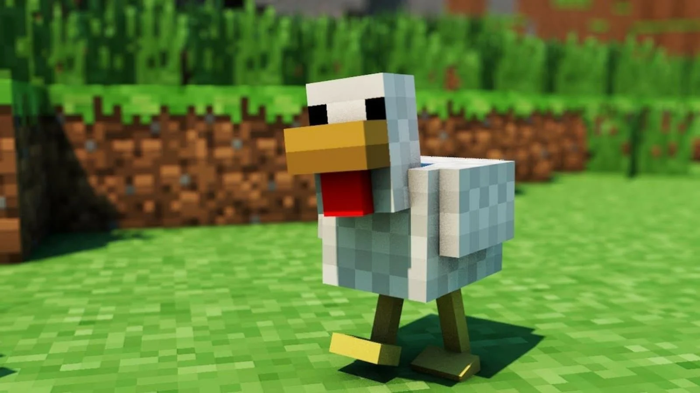

Acceuil
Les animaux et leurs utilités
En mode survie, il faut rapidement créer un élevage de vaches pour survivre.
Voici comment les attirer à vous:
Vache: porter du blé à la main.
Poule: porter des graines à la main.
Champimeuh: porter du blé à la main.
Chat, Ocelot: porter du saumon ou de la morue à la main
Loup: porter un os à la main
Tortue: porter de l'herbe aquatique à la main
Cochon: porter une carotte à la main
Dauphin: porter de la morue à la main (Cependant, vous ne pouvez pas les apprivoiser ou les accoupler.)
Panda: porter du bambou à la main
Lama, Cheval, Mule, Âne: porter à la main une botte de foin
Hoglin: porter un champignon rouge à la main
Perroquet: porter des graines de pastèque(Cependant, vous ne pouvez pas les accoupler.)
Renard: porter des baies à la main
Lapins: porter des carottes à la main (Cependant, vous ne pouvez pas les apprivoiser ou les accoupler.)
Loup: porter un os à la main
Cependant, il y a certains animaux qui n'apparaissent que dans un biome précis. Par exemple, les champimeuh
n'apparaissent que dans le biome champignon. D'ailleurs, (petite anecdote) lorsqu'un champimeuh est frappé par
la foudre, il change de couleur de champignon. Rouge? Hop-là, brun!
Les Hoglins, dans le Nether.
Les pandas, Dans la jungle, tout comme les perroquets et les ocelots.
Le renard, dans le biome Taïga, Méga Taïga, ou alors Taïga ennéigée.
Le dauphin, plutôt dans les océans chauds, comme la tortue. (Tropiques) En en parlant, le dauphin est un vrai
détecteur à trésor!
Il te suffit de le nourrir avec de la morue. Il vous aidera à trouver d'inestimables trésors!
Les grenouilles, dans les marais.
Les abeilles, dans les plaines, champs de sakuras par exemple.
Les lapins, assez souvent dans le désert, tout comme les dromadaires.
Les chauves-souris, dans les grottes (Cavernes).
Les chèvres, dans les biomes enneigés.
Les chats (Pas des ocelots) dans les villages.
Les loups, dans les forêts.
L'Ours blanc, bien sûr, dans les biomes froids.
Les axolots, comme les chauves-souris, dans les grottes.